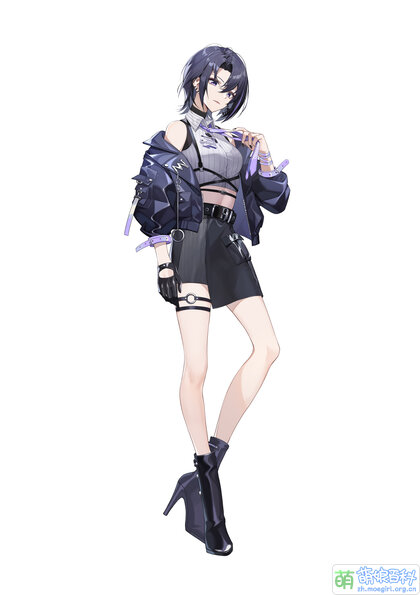

| 首页 | 团体资料 | 成员介绍 | 相关作品 |
基本资料
|
 | ||||||||||||||||||||||||||||||||||||||||||||||||
简介A-SOUL中的Vocal担当，是一位帅气的酷盖（软妹）。而且她不仅是Vocal担当，还拥有着令人惊叹的舞力。 自称普通话二甲水平，但因为经常口胡也被观众叫做“王力口胡” 个人单播的内容往往是练歌或者唱歌和舞蹈二者交替进行，设定上是一位酷girl。 |
|||||||||||||||||||||||||||||||||||||||||||||||||
官方形象目前共有16种形象，分别为：常服，常服（无外套）、常服.ver圣诞炫彩，健身运动服、水手服、团服、团服.赤伶、传说的世界国风、春节服，新春毛衣（发病毛衣）、泳装、泳衣.ver生日白色炫彩、欧莱雅三件、新春.ver2022冬奥炫彩、睡衣派对 |
|||||||||||||||||||||||||||||||||||||||||||||||||
 |
|||||||||||||||||||||||||||||||||||||||||||||||||